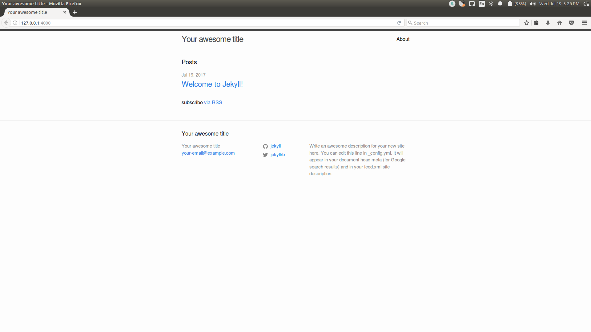
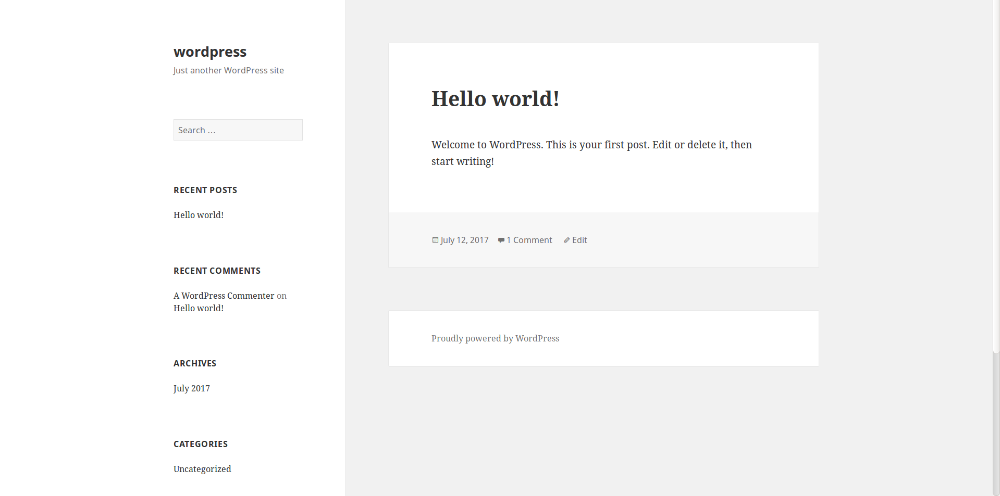

What is Jekyll, Hugo and WordPress?
What is Jekyll?
Jekyll is basically a static-site generator written in Ruby and distributed under open source license. It happens to be the engine behind Github pages which allows hosting a blog or a website on Github servers for free.
The great thing about jekyll is that it supports markdown format. It takes in a template and runs it through a Markdown converter and renders it outputting a static HTML page.

What is Hugo?
Hugo is a general-purpose website framework. Technically speaking, Hugo is a static site generator. Unlike systems that dynamically build a page with each visitor request, Hugo builds pages when you create or update your content.
And similar to Jekyll, Hugo sites run without the need for a database or dependencies on expensive runtimes like Ruby, Python, or PHP.
While Jekyll comes with a default theme template as shown above, Hugo doesn’t.
What is WordPress?
WordPress is the most popular blogging platform over the Internet. Perhaps about 24% of the website on the web run on WordPress engine and is used by giants like TIMES, Forbes etc.
WordPress started as just a blogging system, but has evolved to be used as full content management system.

That’s great but Why Jekyll?
Now comes the big question, Why Jekyll?
Like most people I spent days deciding which blogging platform would be “better” for one of my own. And most of the people end up using WordPress. Mostly because of it’s popularity or they’ve heard of it.
However, I preferred to go with Jekyll. I’m not sure if it’s right to go with Jekyll over Hugo or WordPress but after looking at the features I needed, it was the way to go.
Flexibility: Jekyll offers a lot of flexibility. I have complete control over the looks of every single page in my blog. Now, anyone could argue that it’s possible with WordPress too. But, with Jekyll, it’s far, far easier, and less time-consuming.
Easy Setup: It takes less than 5 minutes to install Jekyll on your local computer. Just a couple of commands, literally, and you’re good to go.Even Hugo is easy to install as it comes in a single binary package. But WordPress takes a little more than a couple of commands to setup.
CLI is Love: I like to work on command line. Jekyll and Hugo provides a handful of commands to work with.
Plugins: WordPress has grown to a big community of users and developers. It comes with a lot of plugins and themes. Jekyll is very scarce when the talk is about themes and plugins. But all that I required was a commenting section which was possible using Disqus.
Extensibility: Because of this plugin architecture, it’s relatively easy to add functionality to Jekyll-generated site with short snippets of code. However, Hugo does not currently have a plugin API at all, so adding that kind of functionality is a bit difficult.